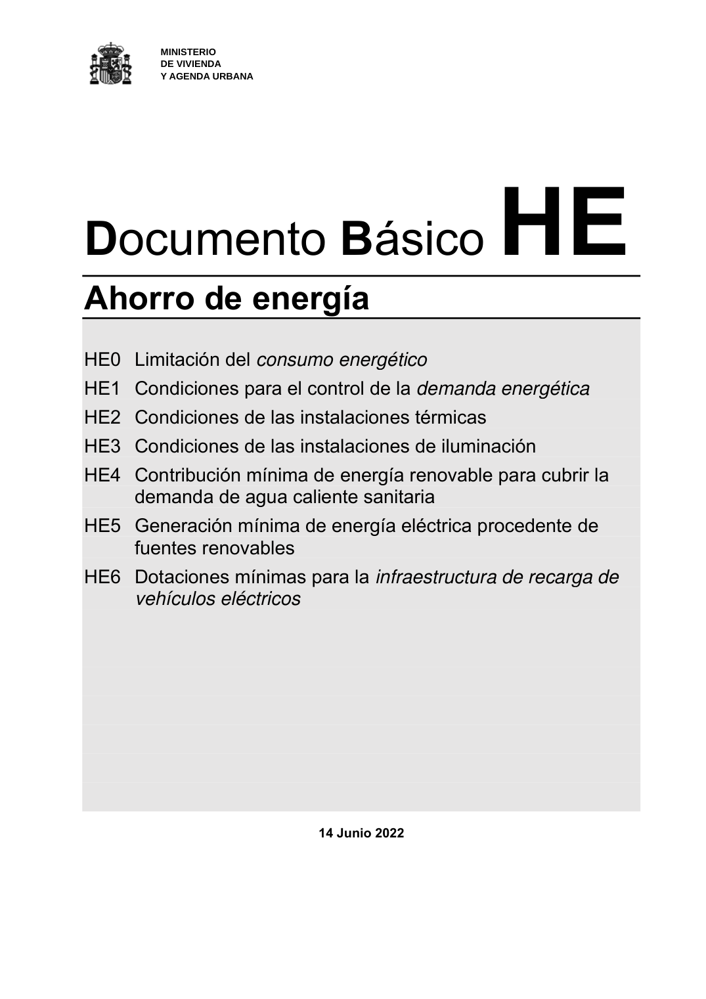

DB-HE Ahorro de energía · edición 2022-06-14 · capa oficial
Documento DB-HE-oficial · SHA-256 del PDF 7f890bd495552e979f83f72c5f5c7b642e745911a8e343a7b5b73023ce0e1f05
Copia fiel del PDF fuente · Fuente oficial
Ficha de la disposición en la fuente oficial
Formatos: JSON del segmento · Markdown
Documento Básico HE Ahorro de energía Ahorro de energía HE0 Limitación del consumo energético HE1 Condiciones para el control de la demanda energética HE2 Condiciones de las instalaciones térmicas HE3 Condiciones de las instalaciones de iluminación HE4 Contribución mínima de energía renovable para cubrir la demanda de agua caliente sanitaria HE5 Generación mínima de energía eléctrica procedente de fuentes renovables HE6 Dotaciones mínimas para la infraestructura de recarga de vehículos eléctricos
